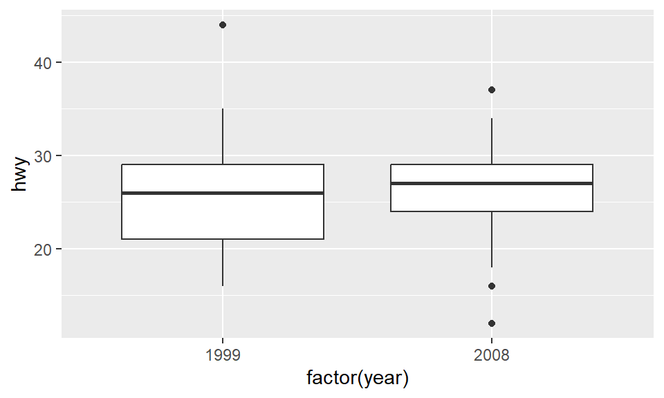
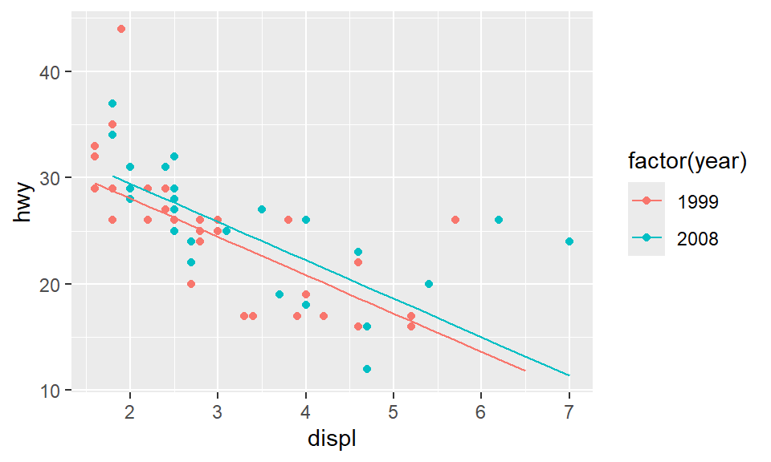

Welcome
Welcome to this interactive tutorial on parallel slopes models! In this lesson, you’ll extend your understanding of simple linear regression to handle more complex real-world scenarios where multiple factors influence an outcome.
Learning Objectives
By the end of this tutorial, you will be able to:
Explain the concept of parallel slopes models and when they are appropriate for analyzing data with both numeric and categorical explanatory variables
Fit parallel slopes models in R using the
lm()function with multiple explanatory variablesInterpret coefficients in parallel slopes models, understanding what they tell us about the relationship between variables after controlling for other factors
Visualize parallel slopes models as multiple parallel lines in a scatterplot and understand the geometric interpretation
Translate between three representations of regression models: mathematical equations, geometric visualizations, and R syntax
Apply parallel slopes models to real-world datasets to answer questions about relationships between variables while accounting for potential confounding factors
Why Parallel Slopes?
Simple linear regression is powerful, but real data often involves multiple factors. For instance, does fuel economy improve over time due to engineering advances, or simply because consumers bought smaller cars? Parallel slopes models help us disentangle these effects by controlling for multiple variables simultaneously.
Let’s get started!
Motivating Example: What if we have two groups?
In simple linear regression, we model a response variable using a single explanatory variable. But what happens when we need to account for multiple factors? Let’s explore this with a real example about fuel efficiency.
Fuel efficiency by engine size
OK, let’s consider a situation in which simple linear regression might not be sophisticated enough to suit our needs. This scatterplot shows the relationship between highway fuel economy and engine size for 77 configurations of manual transmission cars popular from 1999 to 2008. It appears as though there is a negative relationship between engine size and fuel economy—which should make sense: bigger engines tend to go in bigger cars, which tend to be heavier, and which tend to get worse mileage.
We could certainly fit a linear regression line through these points, but that would only tell us part of the story.
ggplot(data = mpg_manuals, aes(x = displ, y = hwy)) +
geom_point()Fuel efficiency over time
Did fuel economy improve over time? These side-by-side boxplots suggest that it might have. But here’s the key question: does this improvement represent a feat of engineering? Or merely a change in consumer taste (e.g., people buying smaller cars)?
The Challenge: How do we know that the increase in fuel economy was not just due to the cars in 2008 generally having smaller engines — which we’ve already observed to be associated with greater fuel economy?
This is where parallel slopes models become essential.
ggplot(data = mpg_manuals, aes(x = factor(year), y = hwy)) +
geom_boxplot()
A parallel slopes model
What we really want is a model that will assess the effects of engine size and year simultaneously. That is, we want to understand the effect of time on fuel economy, after controlling for engine size.
Here we see a visual depiction of a parallel slopes model. These models occur when one of the explanatory variables is numeric, and the other is categorical. In this case, the year variables has two levels, and the model accordingly consists of two parallel lines.
Adding a new variable
Consider:
\[ hwy = \beta_0 + \beta_1 \cdot displ + \beta_2 \cdot year + \epsilon \]
Multiple regression allows us to build such models by simply adding another variable—and another coefficient—to our model.
Adding a new variable in R
As you might suspect, telling R about the second variable in our
regression model is just as easy. As you might expect, telling R about
the second variable in our regression model is straightforward. We
simply add another term to the right-hand side of the formula using the
+ operator.
Important: Here we must ensure that R interprets
year as a categorical variable by wrapping it in
factor(), since it’s encoded numerically but represents
distinct time periods, not a continuous quantity.
lm(hwy ~ displ + factor(year), data = mpg)##
## Call:
## lm(formula = hwy ~ displ + factor(year), data = mpg)
##
## Coefficients:
## (Intercept) displ factor(year)2008
## 35.276 -3.611 1.402Fitting a parallel slopes model
We use the lm() function to fit linear models to data.
In this case, we want to understand how the price of MarioKart games
sold at auction varies as a function of not only the number of wheels
included in the package, but also whether the item is new or used.
Obviously, it is expected that you might have to pay a premium to buy
these new. But how much is that premium? Can we estimate its value
after controlling for the number of wheels?
We will fit a parallel slopes model using lm(). In
addition to the data argument, lm() needs to
know which variables you want to include in your regression model, and
how you want to include them. It accomplishes this using a
formula argument. A simple linear regression formula looks
like y ~ x, where y is the name of the
response variable, and x is the name of the explanatory
variable. Here, we will simply extend this formula to include multiple
explanatory variables. A parallel slopes model has the form
y ~ x + z, where z is a categorical
explanatory variable, and x is a numerical explanatory
variable.
The output from lm() is a model object, which when
printed, will show the fitted coefficients.
- The dataset
mariokartis already loaded for you. Take a peek at the data usingglimpse(). (See also the details of themariokartdata set on our data set page.) - Use
lm()to fit a parallel slopes model for total price as a function of the number of wheels and the condition of the item. Use the argumentdatato specify the dataset you’re using.
# Explore the data
# Fit parallel slopes# Explore the data
glimpse(mariokart)# Fit parallel slopes
lm(total_pr ~ ___ + ___, data = mariokart)# Explore the data
glimpse(mariokart)
# Fit parallel slopes
lm(total_pr ~ wheels + cond, data = mariokart)Reasoning about two intercepts
The mariokart data contains several other variables. The
total_pr, start_pr, and ship_pr
variables are numeric, while the cond and
stock_photo variables are categorical.
Hint: Remember, a parallel slopes model uses one numeric variable and one categorical variable.
Visualizing parallel slopes models
Three variables, one plot
In this scatterplot, we use color to differentiate the cars from 2008 from those in 1999. Do you notice anything about the green points relative to the red points?
In this manner, we have depicted three variables—two numeric and one categorical—on the same scatterplot. Thus, this plot will enable us to visualize our parallel slopes model in the data space.
data_space <- ggplot(data = mpg_manuals, aes(x = displ, y = hwy, color = factor(year))) +
geom_point()
data_spaceSetting up the model
Define \[newer = \begin{cases} 1 & \text{if } year = 2008 , \\\\ 0 & \text{if } year = 1999 \end{cases}\]
Our model is:
\[ \hat{hwy} = \hat{\beta}_0 + \hat{\beta}_1 \cdot displ + \hat{\beta}_2 \cdot newer \]
We’re going to make use of a little high school algebra to inform our understanding of the geometry of our model.
First, since our categorical explanatory variable year
has only two levels, we’re going to define a binary variable called
newer that takes on the value 1 for cars from 2008, and is
0 otherwise.
Then, we can express our model mathematically using the following equation.
Two vintages of cars
For
year = 2008, we have \[ \hat{hwy} = 35.276 - 3.611 \cdot displ + 1.402 \cdot (1) =\] \[= \left( 35.276 + 1.402 \right) - 3.611 \cdot displ \]For
year = 1999, we have \[ \hat{hwy} = 35.276 - 3.611 \cdot displ + 1.402 \cdot (0) =\] \[ = 35.276 - 3.611 \cdot displ \]
We compute the fitted coefficients using lm().
mod <- lm(hwy ~ displ + factor(year), data = mpg)
mod##
## Call:
## lm(formula = hwy ~ displ + factor(year), data = mpg)
##
## Coefficients:
## (Intercept) displ factor(year)2008
## 35.276 -3.611 1.402So what happens when the cars are newer? Plugging in and simplifying
reveals the equation for a line. Note that since
displacement is our numeric explanatory variable, the slope
of the line is -3.611 mpg per litre, and the intercept is 36.678—the sum
of the other two coefficients.
What about the older cars from 1999? In that case, the value of
newer is 0, and plugging that in to our equation also
results in the equation for a line. This line also has a slope of -3.611
mpg per litre, but now the intercept is just 35.276 mpg.
Two parallel lines
\[ \begin{aligned} \hat{hwy} &= ( \hat{\beta}_0 + \hat{\beta}_2 ) + \hat{\beta}_1 \cdot displ \\\\ &= \left( 35.276 + 1.402 \right) - 3.611 \cdot displ \\\\ &= \, \stackrel{intercept}{36.678} - \stackrel{slope}{3.611} \cdot displ \end{aligned} \]
\[ \begin{aligned} \hat{hwy} &= \hat{\beta}_0 + \hat{\beta}_1 \cdot displ \\\\ &= 35.276 - 3.611 \cdot displ \\\\ &= \, \stackrel{intercept}{35.276} - \stackrel{slope}{3.611} \cdot displ \end{aligned} \]
Thus, our model consists of two parallel lines: one for newer cars from 2008, and one for older cars from 1999. The two lines are parallel because they have the same slope, but they are not the same line, because they have different intercepts.
This is why models with one numeric explanatory variable and one categorical explanatory variable are called parallel slopes models.
Retrieving the coefficients
augment(mod) ## hwy displ `factor(year)` .fitted .se.fit .resid .hat
## 1 29 1.8 1999 28.77593 0.4522966 0.22406921 0.014314273
## 2 29 1.8 1999 28.77593 0.4522966 0.22406921 0.014314273
## 3 31 2.0 2008 29.45587 0.4753645 1.54412984 0.015811613
## 4 30 2.0 2008 29.45587 0.4753645 0.54412984 0.015811613
## 5 26 2.8 1999 25.16494 0.3617297 0.83505537 0.009155689
## 6 26 2.8 1999 25.16494 0.3617297 0.83505537 0.009155689
## 7 27 3.1 2008 25.48379 0.3661035 1.51621462 0.009378436
## 8 26 1.8 1999 28.77593 0.4522966 -2.77593079 0.014314273
## 9 25 1.8 1999 28.77593 0.4522966 -3.77593079 0.014314273
## 10 28 2.0 2008 29.45587 0.4753645 -1.45587016 0.015811613In order to visualize our model, we need to extract the necessary
information about our model that was created by lm().
Conceptually, the three fitted coefficients will give us that
information. However, it’s easier in ggplot to simply plot the fitted
values and connect them with a line. This process is streamlined by the
augment() function from the broom package.
Applying augment() to our model will return a data frame
with the fitted values attached, like the one you see here. Note that
the name for the variable that contains the fitted values is
.fitted, and the name of the categorical variable is
factor(year).
Parallel lines on the scatterplot
Finally, we can use the geom_line() function to put the
two lines on the scatterplot that we created previously. We need to tell
geom_line() to plot the fitted values, rather than the
observed values, and those values only exist in the augmented model
object that we created previously.
data_space +
geom_line(data = augment(mod), aes(y = .fitted, color = `factor(year)`))
Using geom_line() and augment()
Parallel slopes models are so-named because we can visualize these models in the data space as not one line, but two parallel lines. To do this, we’ll draw two things:
- a scatterplot showing the data, with color separating the points into groups
- a line for each value of the categorical variable
Our plotting strategy is to compute the fitted values, plot these,
and connect the points to form a line. The augment()
function from the broom package provides an easy way to
add the fitted values to our data frame, and the
geom_line() function can then use that data frame to plot
the points and connect them.
Note that this approach has the added benefit of automatically colouring the lines appropriately to match the data.
Your turn
You already know how to use ggplot() and
geom_point() to make the scatterplot. The only twist is
that now you’ll pass your augment()-ed model as the
data argument in your ggplot() call. When you
add your geom_line(), instead of letting the y
aesthetic inherit its values from the ggplot() call, you
can set it to the .fitted column of the
augment()-ed model. This has the advantage of automatically
colouring the lines for you.
Coming back to the mariokart data, try to plot the
parallel slope model:
The parallel slopes model mod relating total price
(total_pr) to the number of wheels and
condition is already in your workspace.
- Call the
augment()function on the model objectmod, then useglimpse(augmented_mod)to explore the resulting data frame. - To create
data_spacefirst map each of the three variables to an aesthetic in yourggplot(), then use thegeom_point()function. - To plot the fitted values as a line, your
geom_line()call will need to specify a newyaesthetic to plot the.fittedvalues.
# Augment the model
augmented_mod <-___
glimpse(___)
# scatterplot, with color
data_space <- ggplot(___, aes(x = ___, y = ___, color = ___)) +
geom_point()
# single call to geom_line()
data_space +
geom_line(aes(y = ___))augmented_mod <- augment(mod)
glimpse(augmented_mod)data_space <- ggplot(augmented_mod, aes(x = wheels, y = total_pr, color = cond)) +
geom_point()# Augment the model
augmented_mod <- augment(mod)
glimpse(augmented_mod)
# scatterplot, with color
data_space <- ggplot(augmented_mod, aes(x = wheels, y = total_pr, color = cond)) +
geom_point()
# single call to geom_line()
data_space +
geom_line(aes(y = .fitted))Interpreting parallel slopes coefficients
Intercept interpretation
Most often, our primary interest in models like this one is interpreting the value of the coefficients. What does the model tell us about the relationship between fuel economy and engine size in the context of the year when the cars were manufactured?
lm(hwy ~ displ + factor(year), data = mpg)##
## Call:
## lm(formula = hwy ~ displ + factor(year), data = mpg)
##
## Coefficients:
## (Intercept) displ factor(year)2008
## 35.276 -3.611 1.402Let’s start with the main intercept. The value is 35.276 and the units are the same as those of the response variable—miles per gallon. Recall that this is the expected fuel economy for a car from 1999 that had an engine size of 0 litres. Of course, in this case, this value has little meaning, since there is no such thing as a car with an engine size of 0 litres, but that is the literal interpretation of the role that 35.276 plays in our model.
As we saw above, the coefficient on year can also be thought of as an
intercept. Note here that R has chosen to report the name of the
coefficient as factor(year)2008. This reflects the fact
that year was the name of the variable we gave R,
factor(year) was the formatting used in the
lm() command, and 2008 is the value of that variable about
which R is reporting. This variable is identical to the newer variable
that we defined in the previous sections. Here, R is telling us that
cars manufactured in 2008 get about 1.4 miles per gallon better gas
mileage than those manufactured in 1999, after controlling for engine
size. This is our key finding, and we’ll return to this in just a
minute.
Slope interpretation
How did we “control for engine size”?
lm(hwy ~ displ + factor(year), data = mpg)##
## Call:
## lm(formula = hwy ~ displ + factor(year), data = mpg)
##
## Coefficients:
## (Intercept) displ factor(year)2008
## 35.276 -3.611 1.402By including the displ variable in our model, we also
obtain a coefficient for engine size. This is our slope coefficient, and
it tells us that each extra litre of engine size is associated with a
decrease in expected fuel economy of 3.61 miles per gallon, after
controlling for year of manufacture. This is the negative relationship
we saw earlier: larger engines tend to go in less fuel efficient cars.
The difference now is that we are able to estimate the size of that
effect while simultaneously considering the effect of time.
Avoiding misunderstandings
The interpretation of coefficients in a multiple regression model can get complicated, so let’s quickly review a few common quandaries:
- There is only one slope
- Which is the reference level?
- What are the units?
- What does it mean to “controlling for”?
First, there is only one slope in the parallel slopes models that we have considered thus far. Yes, there are two explanatory variables, but only the one numeric explanatory variable is associated with a slope. Later, we will consider more complex models that have more than one “slope.”
Second, pay careful attention to the reference level of your categorical variables. Every factor in R has a reference level - which you can set - but by default it is the first level alphabetically.
Third, units are important. Every coefficient has units that relate to the units of the response variable. Intercepts are in the same units as the response variable, and slope coefficients are in the units of the response per unit of the explanatory variable.
Finally, the key difference in multiple regression is that coefficients must be interpreted in the context of the other explanatory variables. The “after controlling for” phrasing is crucial to having a valid understanding of your model.
Intercept interpretation
Recall that the cond variable of the
mariokart data is either new or
used. Here are the fitted coefficients from your model:
lm(total_pr ~ wheels + cond, data = mariokart)##
## Call:
## lm(formula = total_pr ~ wheels + cond, data = mariokart)
##
## Coefficients:
## (Intercept) wheels condused
## 42.370 7.233 -5.585Choose the correct interpretation of the slope coefficient:
Common slope interpretation
Recall the fitted coefficients from our model:
lm(total_pr ~ wheels + cond, data = mariokart)##
## Call:
## lm(formula = total_pr ~ wheels + cond, data = mariokart)
##
## Coefficients:
## (Intercept) wheels condused
## 42.370 7.233 -5.585Three ways to describe a model
Regression models are abstract concepts, and statisticians have developed three complementary ways to understand them:
- Mathematical: Using equations with variables and coefficients
- Geometric: Visualizing as lines, planes, or
surfaces in data space
- Syntactic: Writing formulas that R can interpret and execute
Understanding all three perspectives will deepen your intuition about how models work. Throughout this tutorial, we’ll move fluidly between these representations, showing how each offers unique insights.
Let’s explore each approach in detail.
Mathematical
A multiple regression model can be expressed as an equation for the response variable y in terms of some explanatory variables \(x_1\) and \(x_2\). The coefficients of the model– \(\beta_0\), \(\beta_1\) , and \(\beta_2\)—allow us to translate our knowledge about x into information about y. A statistical model will always include an error term like epsilon that captures our uncertainty. These errors—which are manifest as residuals—are critical to the process of statistical inference—but that is a subject for a later course. For now, we will focus on the variables and the coefficients.
Equation: \(y = \beta_0 + \beta_1 x_1 + \beta_2 x_2 + \epsilon\)
Residuals: \(\epsilon \sim N(0, \sigma_\epsilon)\)
Coefficients: \(\beta_0, \beta_1, \beta_2\)
Geometric
Math isn’t everyone’s cup of tea, and while this doesn’t make it any less important, we will develop geometric intuition about regression models in this tutorial. Our data live in a “space,” and we will refer to this as the “data space.” In this scatterplot, we view the highway gas mileage of several popular cars along with the corresponding size of their engines—as measured by displacement. Each point on the scatterplot represents an observation.
A simple linear regression model can be visualized as a line through this data space.
Syntactic
lm(hwy ~ displ + factor(year), data = mpg)##
## Call:
## lm(formula = hwy ~ displ + factor(year), data = mpg)
##
## Coefficients:
## (Intercept) displ factor(year)2008
## 35.276 -3.611 1.402Finally, R doesn’t really understand math or geometry. But of course, R is really good at performing the computations that we will need in order to fit and visualize our models. We will use a special syntax—called a formula—to communicate models to R. This syntax is less specific and more suggestive than a mathematical equation, but can be put into a 1-1 correspondence with it.
Multiple regression
\(y = \beta_0 + \beta_1 x_1 + \beta_2 x_2 + \cdots + \beta_p x_p + \epsilon\)
y ~ x1 + x2 + x3one line becomes multiple lines or a plane, or even multiple planes
As we extend simple linear regression into multiple regression, we will add additional explanatory variables. Instead of just having x, we will have x1 and x2, even possibly even more. The formula syntax will extend naturally, and additional coefficients will make their way into the mathematical equation.
As we add complexity, the data space will increase from two to three—and even more—dimensions, and the class of geometric objects that we can use to describe models will broaden to include multiple lines, planes, and even multiple planes.
Unfortunately, while the mathematical and syntactic characterizations will scale easily to an arbitrary number of explanatory variables, human beings are limited in our ability to visually process more than three numeric dimensions. We will get creative to push this boundary as far as we can, but we are doomed to fail.
Practice: Syntax, math, and plots
Now it’s your turn! In the following exercises, you’ll practice building parallel slopes models by translating between mathematical notation, visualizations, and R code. These exercises will help solidify your understanding of how these different representations connect.
Syntax from math
The babies data set contains observations about the
birthweight and other characteristics of children born in the San
Francisco Bay area from 1960–1967 (You will find details of the babies
data on our data set
page.).
Your Task: Build a model for birthweight as a
function of the mother’s age and whether this child was her
first birth (parity == 0 means first birth).
Mathematical Model: \[ birthweight = \beta_0 + \beta_1 \cdot age + \beta_2 \cdot parity + \epsilon \]
Note: The birthweight variable is recorded in the
column bwt.
Instructions: - Use lm() to build the
parallel slopes model specified above - The parity variable
is already coded as binary numeric values (0 or 1), so you don’t need to
use factor() - Remember that the formula syntax mirrors the
mathematical equation: y ~ x1 + x2
\[ birthweight = \beta_0 + \beta_1 \cdot age + \beta_2 \cdot parity + \epsilon \]
The birthweight variable is recorded in the column
bwt.
Use
lm()to build the parallel slopes model specified above. It’s not necessary to usefactor()in this case as the variableparityis coded using binary numeric values.The formula syntax is based on the mathematical expression of the model. For example, given the model \(y = \beta_0 + \beta_1 \cdot x + \beta_2 \cdot z\), the corresponding formula is
y ~ x + z.
# build modellm(bwt ~ ___ + ___, data = ___)# build model
lm(bwt ~ age + parity, data = babies)Syntax from plot
This time, we’d like to build a model for birthweight as a function of the length of gestation and the mother’s smoking status. Use the plot to inform your model specification.
Use lm() to build a parallel slopes model implied by the
plot. It’s not necessary to use factor() in this case
either.
# build modellm(___ ~ ___ + ___, data = babies)# build model
lm(bwt ~ gestation + smoke, data = babies)Congratulations!
You have successfully completed this activity. You need to generate a hash for submission, click “Next Topic”, generate the hash, and submit it on Blackboard.
Submit